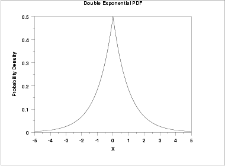
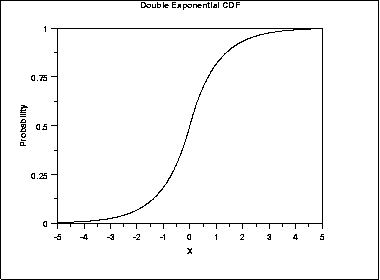
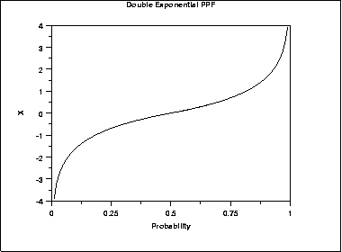
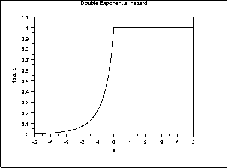
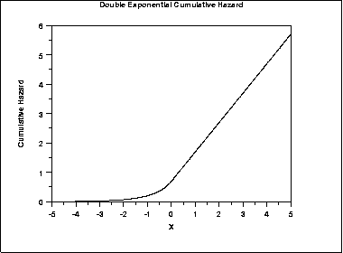
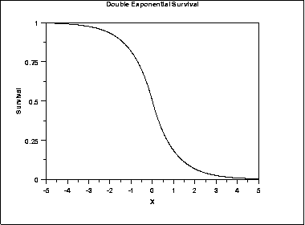
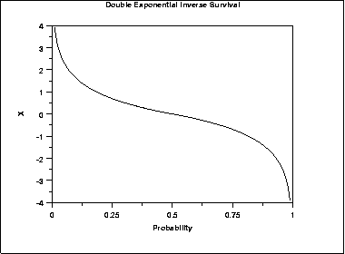

|
1.
Exploratory Data Analysis
1.3. EDA Techniques 1.3.6. Probability Distributions 1.3.6.6. Gallery of Distributions
|
|||||||||||||||||
| Probability Density Function |
The general formula for the probability
density function of the double exponential distribution is
\( f(x) = \frac{e^{-\left| \frac{x-\mu}{\beta} \right| }} {2\beta} \) where μ is the location parameter and β is the scale parameter. The case where μ = 0 and β = 1 is called the standard double exponential distribution. The equation for the standard double exponential distribution is \( f(x) = \frac{e^{-|x|}} {2} \) Since the general form of probability functions can be expressed in terms of the standard distribution, all subsequent formulas in this section are given for the standard form of the function. Note that the double exponential distribution is also commonly referred to as the Laplace distribution. The following is the plot of the double exponential probability density function.  |
||||||||||||||||
| Cumulative Distribution Function |
The formula for the cumulative distribution
function of the double exponential distribution is
\( F(x) = \begin{array}{ll} \frac{e^{x}} {2} & \mbox{for $x < 0$} \\ 1 - \frac{e^{-x}} {2} & \mbox{for $x \ge 0$} \end{array} \) The following is the plot of the double exponential cumulative distribution function.  |
||||||||||||||||
| Percent Point Function |
The formula for the percent point
function of the double exponential distribution is
\( G(P) = \begin{array}{ll} \log(2p) & \mbox{for $p \le 0.5$} \\ -\log(2(1 - p)) & \mbox{for $p > 0.5$} \end{array} \) The following is the plot of the double exponential percent point function.  |
||||||||||||||||
| Hazard Function |
The formula for the hazard function of
the double exponential distribution is
\( h(x) = \begin{array}{ll} \frac{e^{x}} {2 - e^{x}} & \mbox{for $x < 0$} \\ 1 & \mbox{for $x \ge 0$} \end{array} \) The following is the plot of the double exponential hazard function.  |
||||||||||||||||
| Cumulative Hazard Function |
The formula for the cumulative hazard
function of the double exponential distribution is
\( H(x) = \begin{array}{ll} -log{(1 - \frac{e^{x}} {2})} & \mbox{for $x < 0$} \\ x + \log{(2)} & \mbox{for $x \ge 0$} \end{array} \) The following is the plot of the double exponential cumulative hazard function.  |
||||||||||||||||
| Survival Function |
The formula for the survival function
of the double exponential distribution is
\( S(x) = \begin{array}{ll} 1 - \frac{e^{x}} {2} & \mbox{for $x < 0$} \\ \frac{e^{-x}} {2} & \mbox{for $x \ge 0$} \end{array} \) The following is the plot of the double exponential survival function.  |
||||||||||||||||
| Inverse Survival Function |
The formula for the inverse
survival function of the double exponential distribution is
\( Z(P) = \begin{array}{ll} \log(2(1-p)) & \mbox{for $p \le 0.5$} \\ -\log(2p) & \mbox{for $p > 0.5$} \end{array} \) The following is the plot of the double exponential inverse survival function.  |
||||||||||||||||
| Common Statistics |
|
||||||||||||||||
| Parameter Estimation |
The maximum likelihood estimators of the location and scale
parameters of the double exponential distribution are
\( \hat{\mu} = \tilde{X} \) \( \hat{\beta} = \frac{\sum_{i=1}^{N}|X_{i} - \tilde{X}|} {N} \) where \(\tilde{X}\) is the sample median. |
||||||||||||||||
| Software | Some general purpose statistical software programs support at least some of the probability functions for the double exponential distribution. | ||||||||||||||||